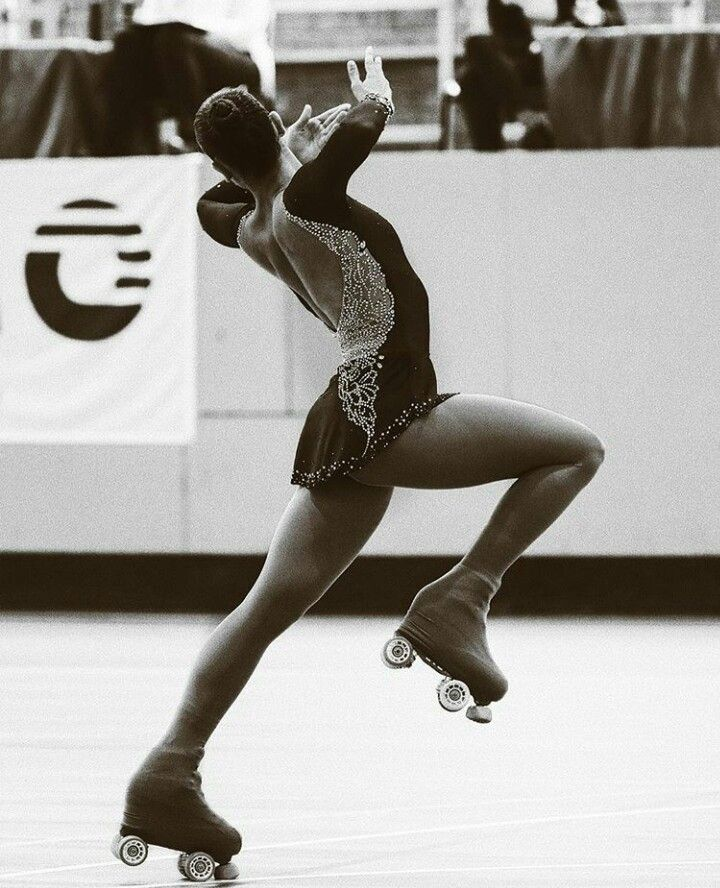
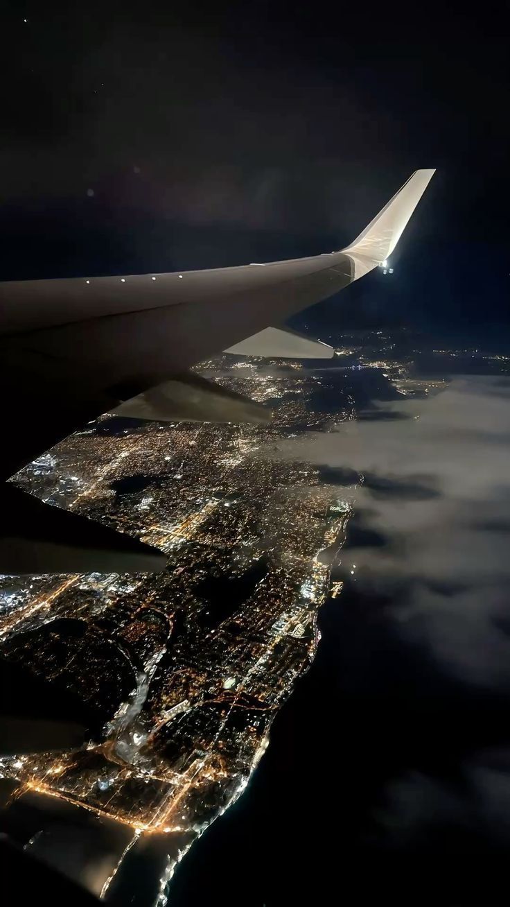
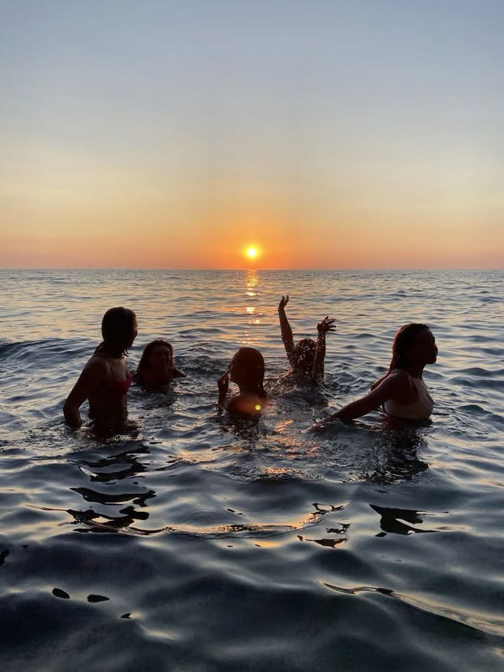

- IL PATTINAGGIO
- USCIRE CON LE MIE AMICHE
- VIAGGIARE
ho iniziato a pattinare all'età di 4 anni con i rollerblade che sono pattini da velocità più che da coreografia,me ne innamorai all'istante, successivamente passando le giornate a pattinare mia madre decise di iscrivermi a Roller Perugia di Santa Sabina, lì scoprì il pattinaggio artistico a rotelle. adesso purtroppo ho smesso a causa di un infortunio, però resterà sempre il mio sport del cuore
non so se definirla proprio una passione ma sicuramente una cosa che faccio con piacere, io sono raramente a casa perché preferisco passare il tempo con il mio gruppo di amiche, che è composto dalle mie sei amiche più il fidanzato di una di loro. Lo chiamiamo Steve perché è sempre con noi. Siamo ragazze molto diverse, con personalità e opinioni molto diverse, ma alla fine andiamo sempre d'accordo. Quando usciamo, manca sempre qualcuno; non siamo mai tutte insieme. Ma una cosa ci unisce: per dimostrarci affetto, ci prendiamo in giro. Quando usciamo, andiamo in centro, a Gherlinda, o nel nostro posto preferito, Menchetti, dove abbiamo tanti bei ricordi. Con loro, so di avere sempre qualcuno che mi protegge e che c'è per me quando ho bisogno.
un'altra cosa che amo sono i viaggi, mi piace girare e conoscere nuovi posti con gente estranea, mi fa stare meglio e mi fa prendere una pausa dalla mia vita a Perugia. Ad oggi non sono stata in molti paesi, perchè sono ancora pèiccola, e viaggiare con i miei non mi piace molto perchè lo reputo noioso. il Mio paese preferito è l'Olanda ci sono stata nel 2022 con mia madre e mia sorella ed ho conosciuto e visto posti meravigliosi.


